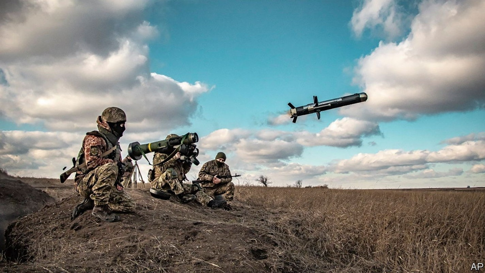
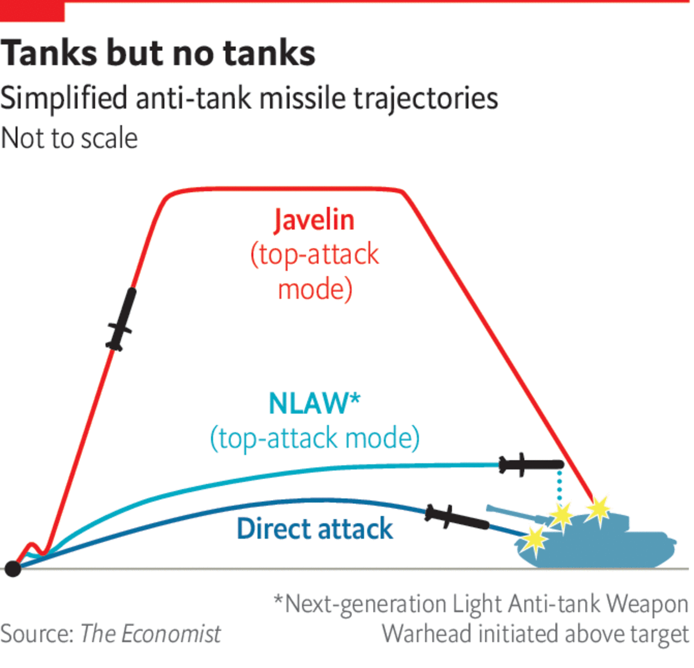

Could Ukraine’s anti-tank missiles hamper a Russian invasion?
They could make it harder for Russia’s army to enter cities, but they won’t halt it

ON JANUARY 17TH curious planespotters watched as Royal Air Force C-17 cargo planes shuttled back and forth between Britain and Ukraine. “We have taken the decision to supply Ukraine with light anti-armour defensive weapons systems,” announced Ben Wallace, Britain’s defence minister, later that day. Photographs from Ukraine showed the planes stuffed full of Next-generation Light Anti-tank Weapons (NLAWs), an Anglo-Swedish anti-tank guided missile (ATGM).
According to Mr Wallace’s deputy, Britain had dispatched “thousands” of these. America started sending Ukraine its own Javelin ATGMs in 2018 and in December approved an additional $200m package of arms, including more Javelins. This month it also gave permission for Estonia to send more. How do anti-tank missiles work—and can they stop a Russian invasion of Ukraine?
During the second world war, the principal means of stopping a tank was with anti-tank guns that fired relatively small-calibre bullets and shells out of a long barrel at very high speeds. But as tanks became more heavily armoured in the post-war period, infantry forces needed new weapons to stop them. First came shoulder-fired rocket launchers, like America’s iconic M1 “bazooka”, which had to be aimed directly at the target. Then came ATGMs, which could manoeuvre in flight.
These came in different flavours. The first generation had a long wire connected to a joystick, which was used to steer the missile onto a tank. They proved their worth in the Yom Kippur war of 1973, when Egyptian forces used Soviet wire-guided missiles to inflict heavy damage on Israeli tanks. The second generation allowed an operator to direct the missile just by keeping the tank in his sights, at first with a wire and later with radio signals.

The latest requires no steering at all. “Fire-and-forget” missiles, like the NLAW and Javelin, have a small sensor in the nose—like a camera or thermal imager—that can spot a tank. Just as important is that many are “top-attack” weapons. The Javelin arcs into the sky and plunges down; the NLAW flies a metre or so above the tank with a warhead pointing down (see diagram). Either way, the point is to strike where the armour is thinnest.
All of this makes them fearsome weapons. In the Syrian civil war, for instance, rebels destroyed over 3,000 of Syria’s mostly Soviet fleet of armoured vehicles using wire-guided ATGMs largely supplied by Arab states. They are not unstoppable, though. ATGMs are really ambush weapons, says Amael Kotlarski, the editor of Janes Infantry Weapons. Though the Javelin can hit a tank over two miles away, the NLAW requires the operator to get within a hair-raising 800 metres or so—an easier task in woodland or cities than on plains.
The missile can also be bamboozled. All modern armoured vehicles can release obscuring smoke, some containing hot white phosphorus smoke, which confuses thermal sensors. In November, some Russian tanks near Ukraine were spotted with “slat” armour on top of the turret, perhaps to misdirect smaller explosives. Others seemed to have heat-emitting decoys on their snorkels (long tubes to allow river crossings) to lead warheads astray—though some Javelins cleverly have two warheads to foil such a trick.
An additional line of defence is an active protection system (APS), a newfangled sort of defence that uses radar to detect incoming rounds and then fires explosively-formed projectiles outwards to stop them. Evidence from Gaza, where Israeli tanks have been equipped with the “Trophy” APS, show that it is highly effective at warding off missiles and grenades.
Only a small proportion of Russian tanks currently have such defences, says Ben Barry, a former army officer now with the International Institute for Strategic Studies, a think-tank in London. However these would probably be in the vanguard of an attack—a problem not only for Ukrainian planners, but also for NATO ones pondering how to stave off any future Russian attack. Ironically, defeating an APS might require reverting to an older form of anti-tank warfare, says Mr Barry: raking the armour with mortar and gunfire in the hope of damaging the radar.
Ukraine’s large and growing armoury of ATGMs would thus be most effective in urban or woodland areas, where defenders could hide among buildings or trees and get close without being detected. Russian commanders, though, mindful of their bitter urban battles in Grozny, the capital of Chechnya, in the 1990s, will want to sap Ukraine’s anti-tank defences long before they get in such close proximity. “In simple terms, the Russian way of war is to destroy enemies with massed artillery fire and mop up the survivors with infantry and armour,” says Mr Kotlarski. “The Russians hope to kill most of the anti-tank gunners with artillery long before their tanks get in range of the missiles.”